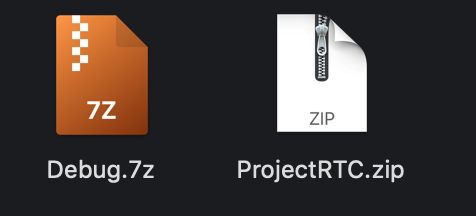
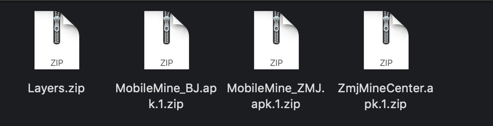
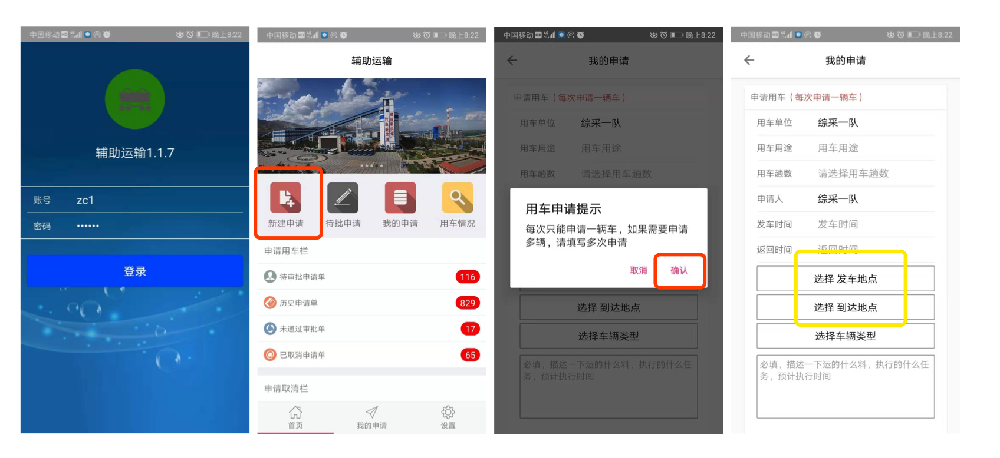
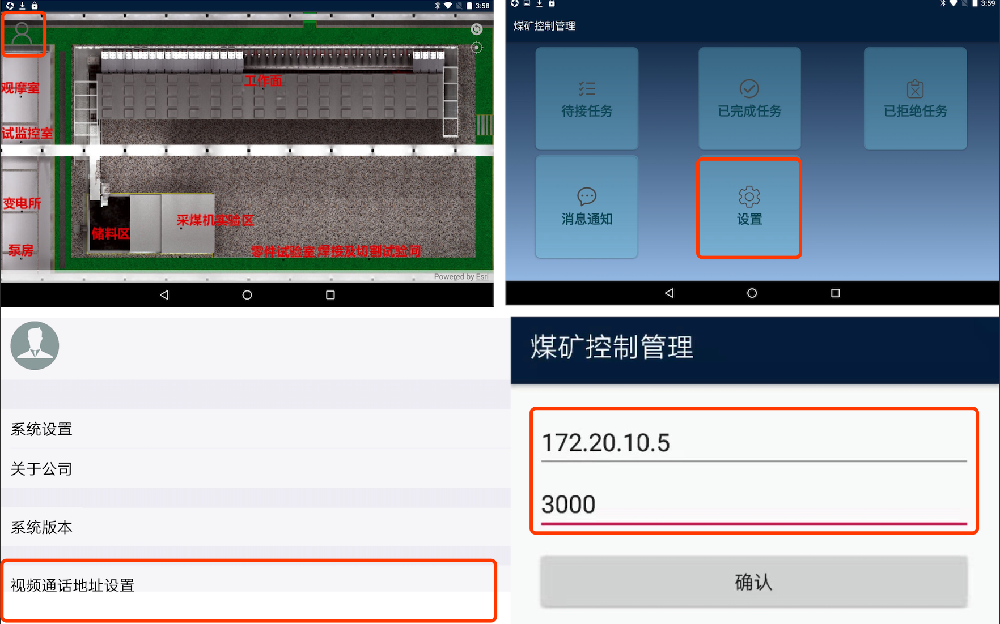
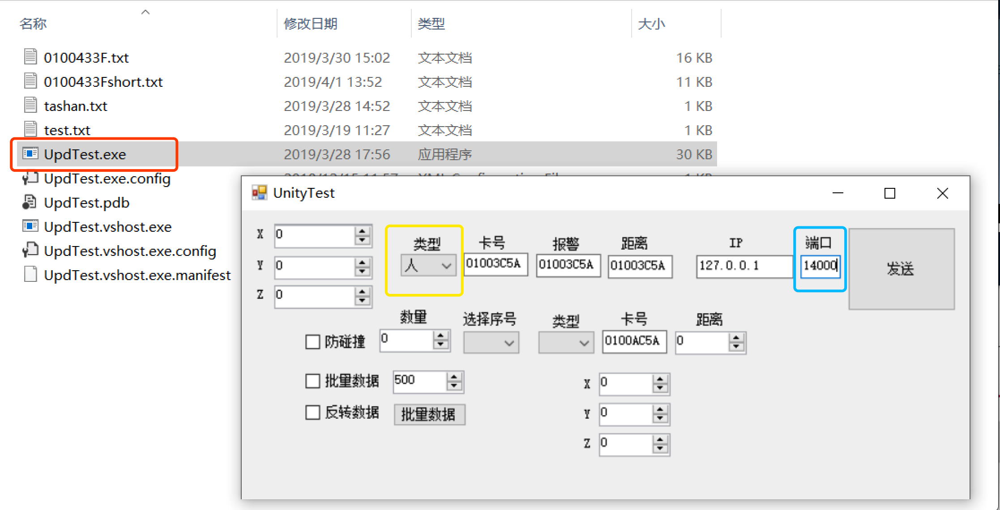
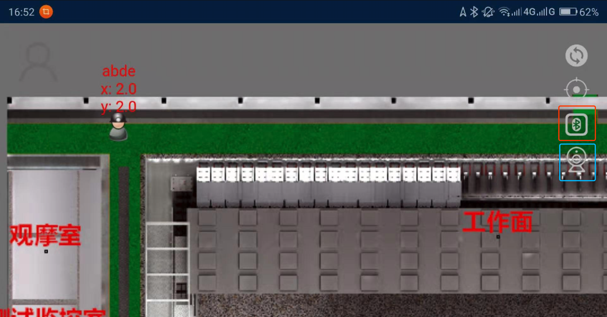
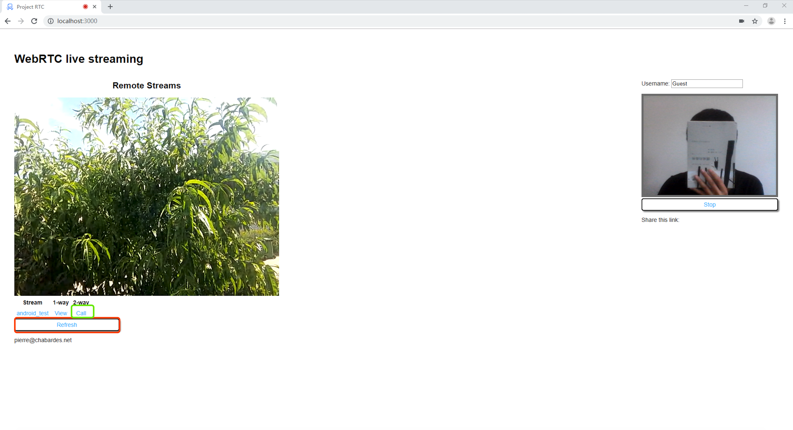
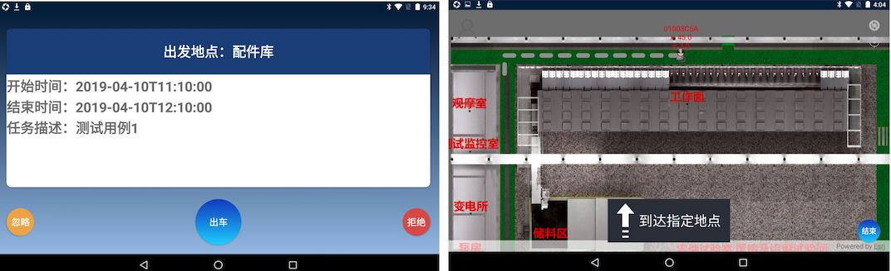
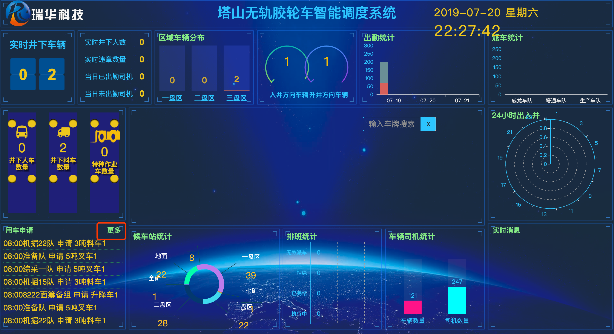

环境搭建
服务端
- 外网服务
外网IP：http://218.240.142.222:8085
需要使用Google Chrome浏览器访问 - 局域网服务
搭建NodeJS服务
运行视频服务ProjectRTC.zip
运行导航模拟轨迹服务Debug.7z

客户端
- 手机-用车申请客户端
MobileMine_BJ.apk.1.zip
如果不需要掩饰调度系统可以不安装 - 手机-辅助运输客户端
MobileMine_ZMJ.apk.1.zip - 平板-煤矿控制管理客户端
ZmjMineCenter.apk.1.zip
手机目录下（和Download平级）下面依次 /MineControl/arcgis/Layers.zip解压后复制到新建目录

操作手册
车载终端导航功能
辅助运输客户端
由
用车单位使用辅助运输客户端提交用车申请
登录系统的用户名：ZC1，密码：123456
点击用车申请，创建新的订单
填写用车申请时需要注意。发车地点：副井口，到达地点：干部澡堂
其他信息可以随便填写
煤矿控制管理客户端
打开
煤矿控制管理客户端，登录后看到地图界面说明Layers加载正确
设置视频语音通话的IP地址和端口号按照图释红色方框标出的地方，依次点击操作
导航模拟轨迹服务
打开红色方框标出的
UpdTest.exe文件，运行导航模拟轨迹服务
黄色方框标出的时在地图上显示的类型：人像图标或者车辆图标
篮色方框标出的时端口号一定要设为14000
语音通话
操作演示之前，先确定
煤矿控制管理客户端和ProjectRTC.zip在同一个局域网内
运行视频服务ProjectRTC.zip（无界面显示，如果已经运行可以忽略）
打开Google Chrome浏览器，访问 http://localhost:3000
点击红色方框标出的图标进行蓝牙连接
点击蓝色方框标出的图标进行客户端视频通话

点击绿色方框标出的图标进行服务端视频通话
点击红色方框标出的图标进行刷新（如果没有CALL按钮才需要点击）

- 演示流程
操作演示之前，先确定
煤矿控制管理客户端和Debug.7z在同一个局域网内1
2
3
4用车单位通过“辅助运输客户端”提交用车申请
“煤矿控制管理客户端”会收到最新的用车申请
司机点击“出车”，进入地图导航模式
到达目的地后，由司机点击“完成”，本次任务执行结束

辅助运输调度功能
打开
用车申请客户端，提交用车申请。（参考辅助运输客户端下单说明）
打开Google Chrome浏览器，访问 塔山服务地址
分别使用diaoducheduiweilong账户登录系统。点击红色方框标出的更多按钮调度执行订单审核车队执行任务分配威龙执行实际派车操作

版本维护
| 维护人 | 操作 | 版本号 |
|---|---|---|
| 王栋 | 创建 | 1.0 |